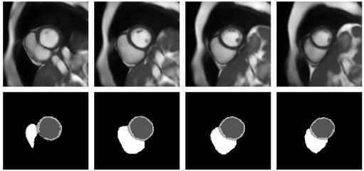
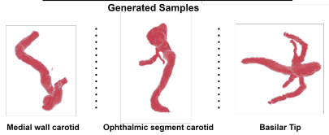
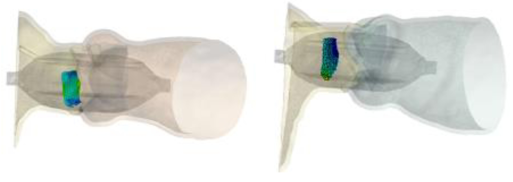
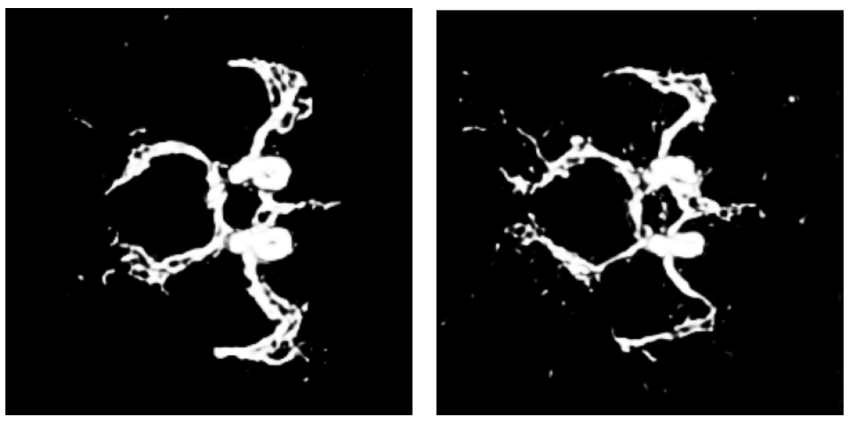

Virtual heart population modeling
Human clinical trials are the most costly and time-consuming part of development and approval for drugs, in vitro diagnostics and medical devices. In-silico trial is a computer simulation technology that performs virtual treatment to virtual patients to obtain the evidence/information, thus enhancing, refining, and eventually even replacing clinical studies. Doing so more rapidly, less expensively, all without putting patients at risk. As the fundamental of in-silico trials, virtual populations of patients can be arbitrarily large and studied for extended periods. It can also support evidence generation for healthcare products that only benefit certain subgroups or very few patients by modelling outcomes where a traditional clinical trial cannot be performed due to the limited available trial participants or unethical scenarios. When subsequent confirmatory human trials are needed, in-silico trials also help refine study designs to be more efficient and more accurately focused on critical issues. The concept of virtual chimaera, for the first time, allows the generative model to capture the variability across multiple sources/populations while remaining plausible. Such a design boosts the efficientcy of data utilisation and efficacy of the model capacity, accelerating the development and deployment of the in silico trials.

The first step towards virtual chimaera
We proposed a generative shape compositional framework that utilizes a part-aware generative model and a spatial composition network to synthesize virtual chimaeras of cardiovascular structures. Unlike previous methods, this approach employs self-supervised learning driven by shared vertices to calculate the necessary spatial transformations, enabling the synthesis of whole-heart shape assemblies consistent with native anatomy. Additionally, the framework introduced two different generation schemes trading off the generative diversity and plausibility to give our model more suitability and applicability for responding to the different scenarios in conducting in-silico trials.

Controllable synthesis of the heart
We condition the flow-based variational auto-encoder on patient demographic data and clinical measurements. This enables the conditional synthesis of plausible VPs (given relevant covariates/conditioning information as inputs), which reflect the observed correlations between non-imaging patient information and anatomical characteristics in the real population.

Web demo of the controllable synthesis of the bi-ventricular heart:

Collaborated Works
|  |
Synthesising 3D Cardiac cine-MR Images and Corresponding Segmentation Masks using a Latent
Diffusion Model
Nina Cheng, Zhengji Liu, Yash Deo, Haoran Dou, Ning Bi, Kun Wu, Fengming Lin, Zeike A. Taylor, Nishant, Ravikumar, Alejandro F. Frangi IEEE International Symposium on Biomedical Imaging, 2024 |
|  |
Few-Shot Learning in Diffusion Models for Generating Cerebral Aneurysm Geometries
Yash Deo, Fengming Lin, Haoran Dou, Nina Cheng, Kun Wu, Nishant, Ravikumar, Alejandro F. Frangi, Tony, Lassila IEEE International Symposium on Biomedical Imaging, 2024 |
|  |
Streamlined Large-scale Construction of Virtual Twins of Aortic Root Complexes for In-silico
Trials of Cardiac Valve Implants
Benjamin Matheson, Haoran Dou, Cristina Teleanu, George Hyde-Linaker, Rebecca Bryan, Mark Palmer, Marc Horner, Dominic Allocco, Dave Flynn, Daniel Blackman, Nishant Ravikumar, Alejandro F. Frangi, Zeike Taylor Virtual Imaging Trials in Medicine, 2024 |
|  |
Shape-guided Conditional Latent Diffusion Models for Synthesising Brain Vasculature
Yash Deo, Haoran Dou, Nishant Ravikumar, Alejandro F Frangi, Toni Lassila MICCAI Workshop: Deep Generative Models, 2023 |